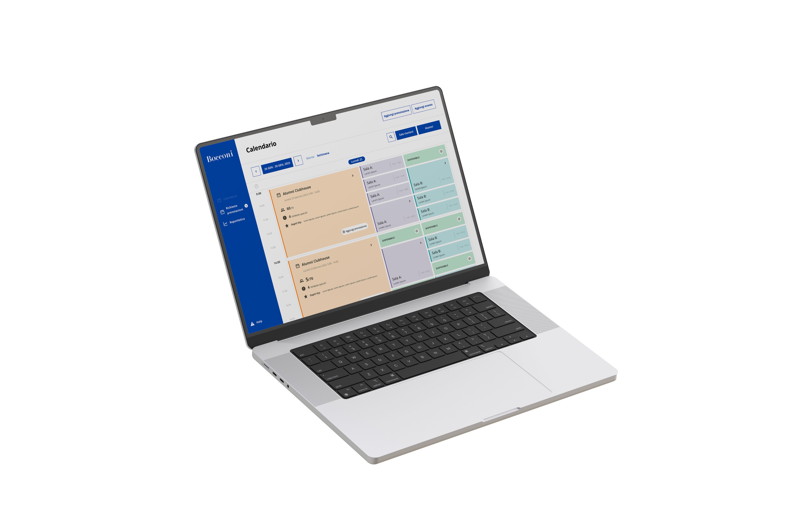
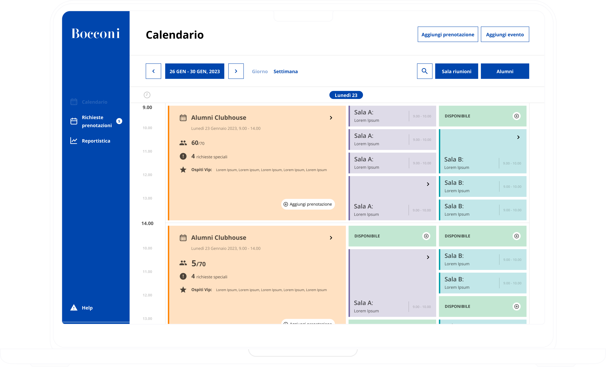
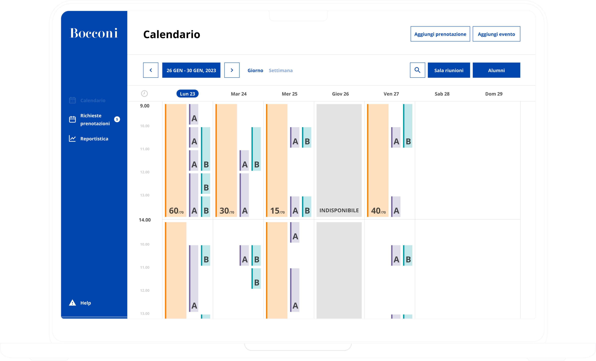

One calendar to run a university.
As Lead Product Designer, I shaped the operational platform that powers Bocconi's daily life — a backend tool used by staff, alumni and administrators to manage classrooms, bookings and events from a single calendar. The goal: turn a multi-role operational system into one interface anyone can read at a glance.

Behind every classroom, a coordination problem.
A university the size of Bocconi runs hundreds of events, classes, alumni gatherings and external meetings every week. Behind every smooth experience sits a coordination problem: classrooms with limited capacity, multiple stakeholders requesting the same space, special guests, last-minute rescheduling. Until this project, the complexity was managed across spreadsheets, emails and disconnected tools — each role using a different system, none seeing the whole picture.
- 3
- user roles — alumni · staff · admin: three perspectives, one shared operational reality
- 5+
- booking states — available, booked, special request, external guest, unavailable, each with its own visual code
- All
- end-to-end flows mapped before the first pixel — booking, approval, rejection, rescheduling, exception handling
The calendar as the operating system.
Most management tools default to tables — rows of data, filters, dropdowns. But operational work doesn't live in tables, it lives in time: someone is booking a room for tomorrow, an event runs at 3pm, a special guest arrives Wednesday. So the calendar wasn't treated as a feature — it became the operating system of the platform. Every action (booking, approving, reporting, monitoring capacity) is anchored to the calendar view. Users don't navigate sections. They navigate time.
The platform was shaped through two stakeholder workshops, end-to-end flow mapping, role-based persona research, and a visual benchmark of comparable enterprise systems. Every requirement was validated against operational reality before moving into design.
- 2workshops with stakeholders to validate requirements, roles and edge cases before design
- 3personas mapped to define needs, permissions and pain points across the platform
- 5end-to-end flows — booking, approval, rejection, rescheduling and exception handling
Design Decision
Different roles, same view.
Alumni, staff and administrators have different responsibilities — but they share the same operational reality. Designing a separate dashboard for each role would have multiplied complexity, fragmented data and introduced inconsistency. Instead, we built one shared calendar that adapts to permissions: staff sees what staff can do, admins see what admins can manage, alumni see what's relevant to them. Same visual language, same interaction model, same mental map. Roles change the actions, not the architecture. The result is a system where the support team, the executive office and the alumni association can finally talk about the same calendar — because they're literally looking at it.
- 1 shared interface adapting to three role permissions — no parallel dashboards, no data silos
- Color-coded states make room availability, requests and conflicts readable at a glance, across every role


Principles
Four rules that shaped every decision.
Scalable navigation
From overview to detail, always one click away. The platform was designed to grow with new spaces, events and roles without restructuring.
Clarity over density
Complex operational data made readable through visual hierarchy and grouping. The screen never shows everything; it shows what matters now.
Consistency
Repeated patterns for bookings, notifications and reports. Users learn the system once and reuse the same logic in every context.
Accessibility
Clear labels, color-coded states, predictable interactions. The platform is operational software — it has to work for everyone on the team, every day.
The interface





Operational software, finally readable.